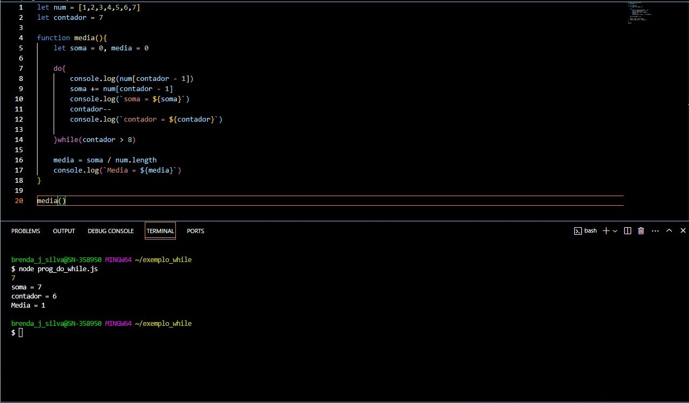

A criação de elementos dinâmicos no JavaScript é essencial para construir páginas web interativas. Dois métodos principais são usados para manipular o DOM: createElement() e appendChild(). createElement(tagName): Cria um novo elemento HTML no DOM, onde tagName é o tipo do elemento (por exemplo, 'div', 'p'). appendChild(childElement): Adiciona um elemento (ou nó) ao final de um elemento pai existente no DOM. Exemplo prático: Criamos um novo div com createElement(). Definimos seu conteúdo e classe. Usamos appendChild() para adicionar o novo div ao contêiner na página. Esses métodos oferecem interatividade, desempenho e flexibilidade nas páginas, permitindo alterações dinâmicas sem recarregar a página. Exemplo típico: criar listas ou itens ao clicar em um botão, melhorando a experiência do usuário.
O for é uma estrutura de repetição em JavaScript que permite executar um bloco de código várias vezes, de acordo com uma condição especificada. Diferente do while, o for é usado principalmente quando você sabe de antemão quantas vezes precisa repetir o código.

O while em JavaScript é uma estrutura de controle que executa um bloco de código repetidamente enquanto uma condição for verdadeira.
O if e o else são fundamentais para a programação condicional em JavaScript, permitindo que o programa tome decisões com base em diferentes condições. O if executa um bloco de código se a condição for verdadeira, o else fornece um bloco alternativo para quando a condição for falsa, e o else if permite verificar múltiplas condições de forma encadeada.